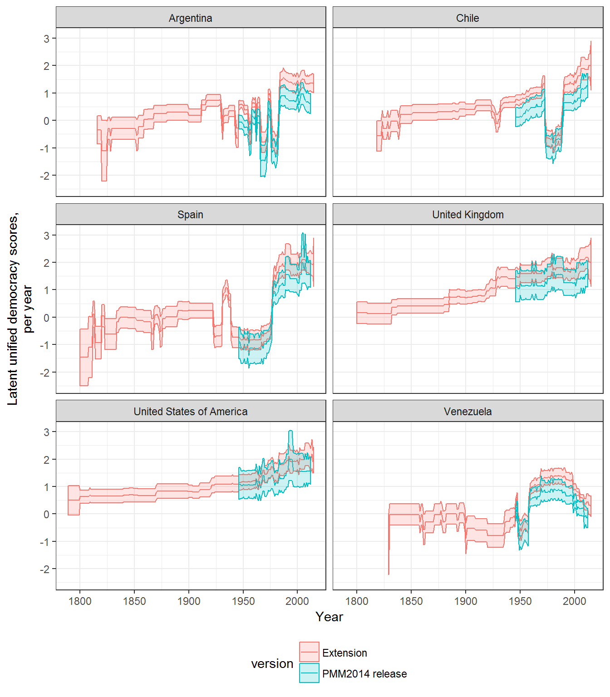
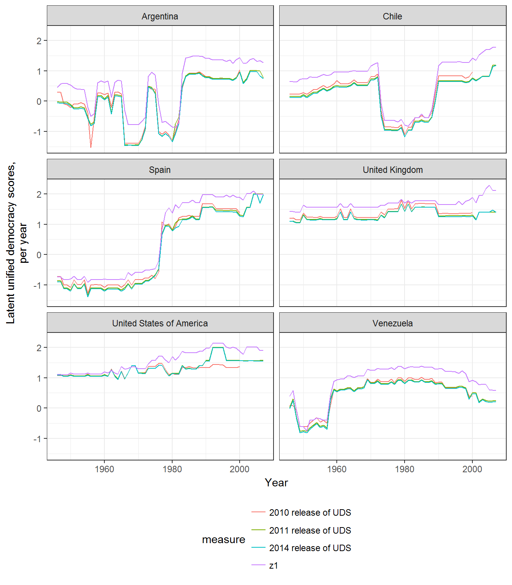
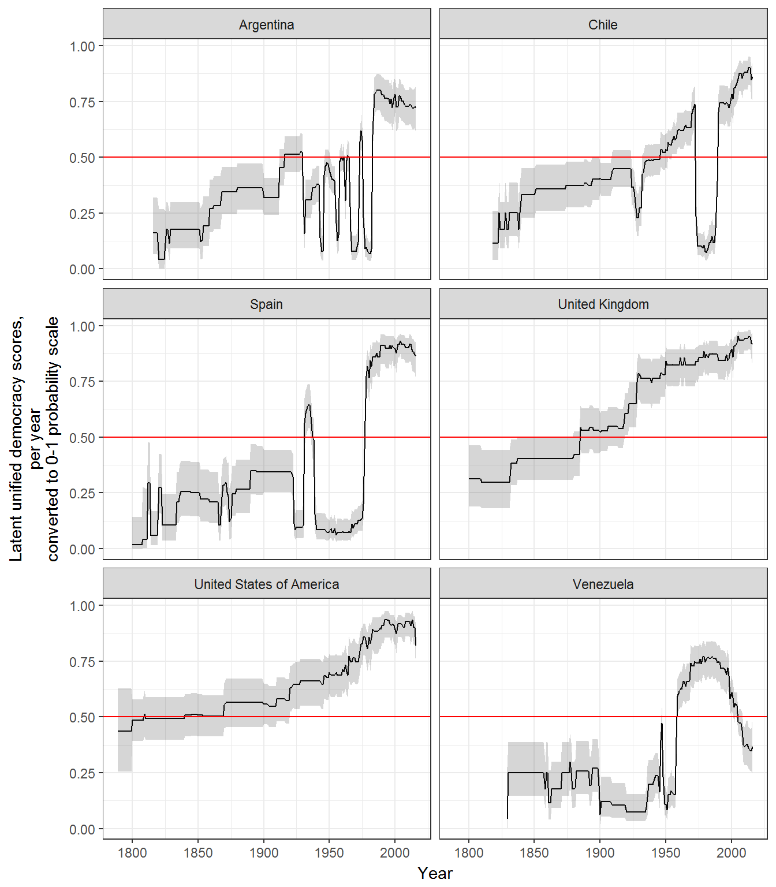
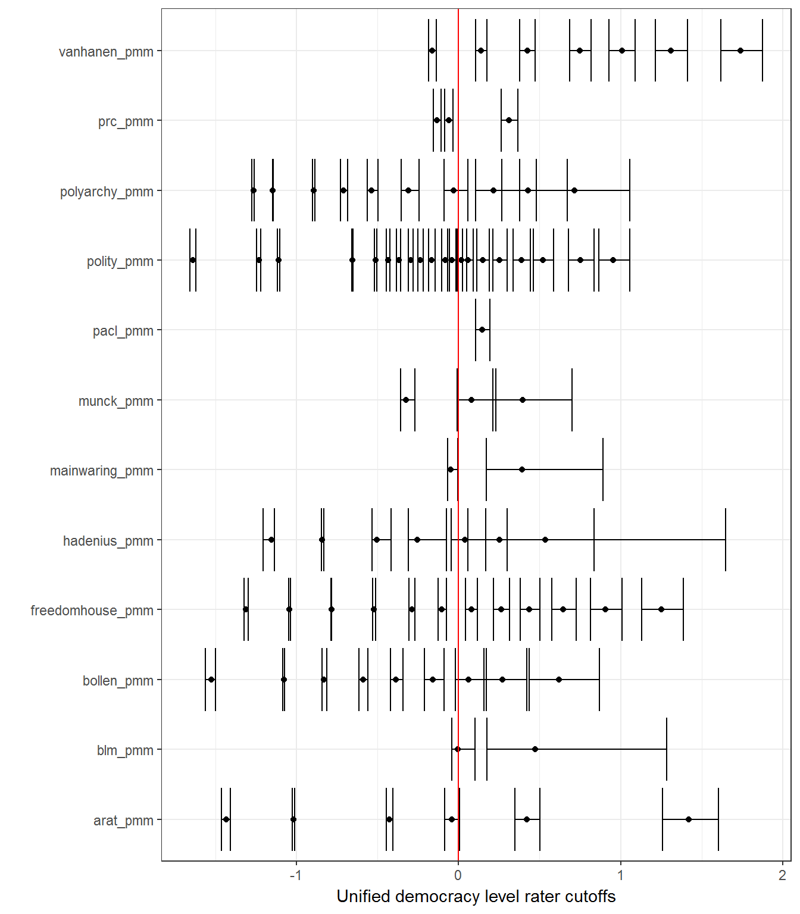
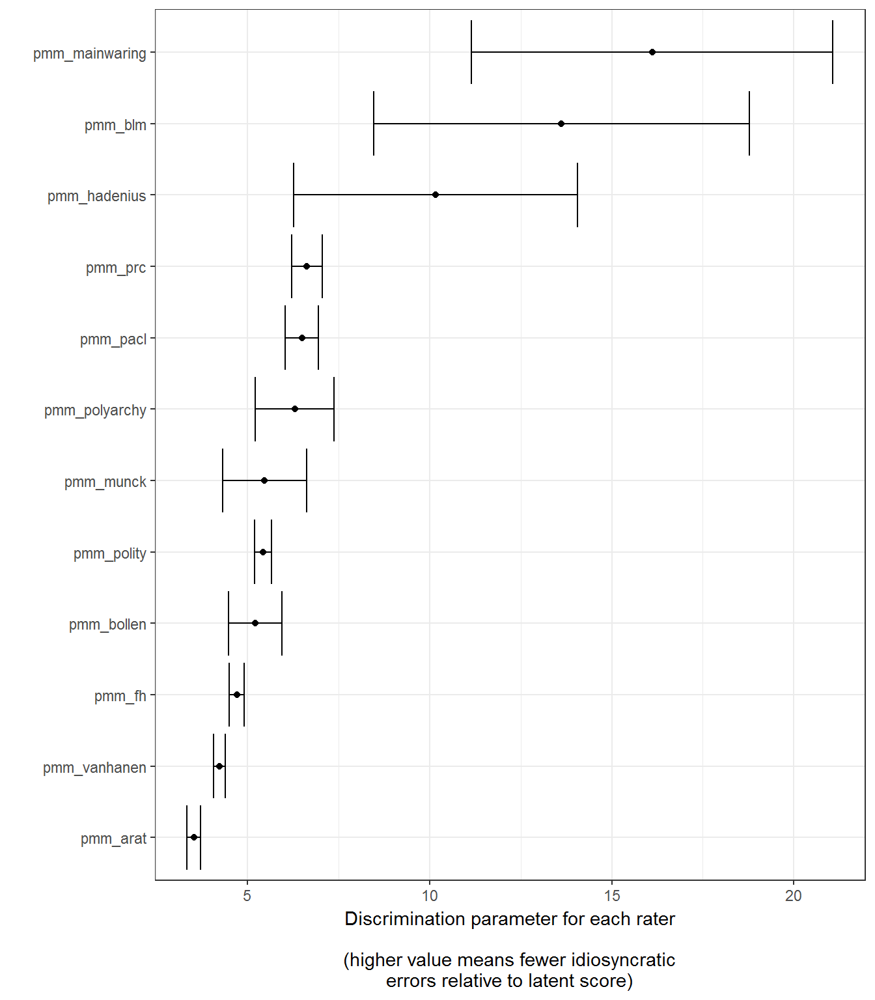
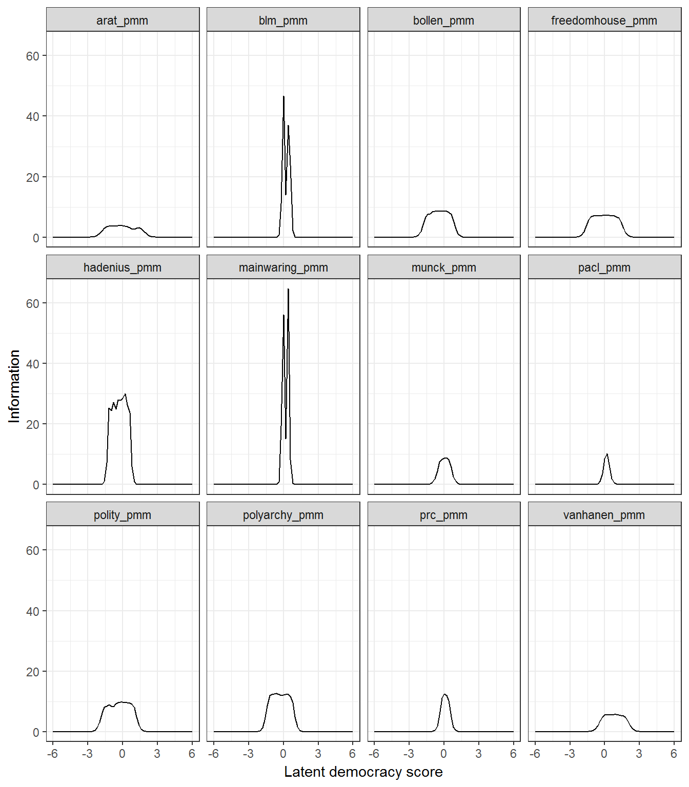

This package contains data and convenience functions that can be used to replicate and extend the Unified Democracy Scores of Pemstein, Meserve, and Melton (2010). It depends on the package mirt (Chalmers 2012), which can quickly compute full-information factor analyses.
The basic procedure for replicating or extending the UD scores is as follows. First, load the library and prepare the democracy data using the convenience functions prepare_data or prepare_democracy; fit a simple mirt model; and finally, extract the scores.
Though you can use your own custom democracy indexes to generate latent (unified) democracy scores, the package provides a dataset, democracy, which contains a large number of democracy measures (from more than 25 different datasets, of varying reliability and coverage) that you can use to generate custom unified democracy scores. (Use ?democracy to view which measures are included in the dataset as well as links to their sources; they are also listed in the references below). For example, suppose we wanted to replicate exactly the 2011 release of the UD scores. PMM’s replication data for that release is included in the democracy dataset: we just need to select the variable names ending in _pmm and use the function prepare_democracy
library(QuickUDS)
library(mirt)
indexes <- names(democracy)[grep("pmm",names(democracy))]
indexes # The measures of democracy used to generate the 2011 release of the UDS## [1] "arat_pmm" "blm_pmm" "bollen_pmm"
## [4] "freedomhouse_pmm" "hadenius_pmm" "mainwaring_pmm"
## [7] "munck_pmm" "pacl_pmm" "polity_pmm"
## [10] "polyarchy_pmm" "prc_pmm" "vanhanen_pmm"data <- prepare_democracy(indexes)The function prepare_democracy selects the appropriate colums from the democracy dataset, gets rid of “empty rows” (country-years that have no measurements of democracy for the chosen indexes; such patterns will make mirt fail), and runs prepare_data on the remaining indexes.
prepare_data transforms selected democracy indexes into ordinal variables suitable for use with mirt, mostly following the advice in Pemstein, Meserve, and Melton’s original article (2010). In particular, prepare_data will try to do the following on any dataset (whether the included democracy dataset or your own dataset of democracy scores):
If a selected index contains the string arat, the function assumes the index is Arat (1991)’s 0-109 democracy score, and cuts it into 7 intervals with the following cutoffs: 50, 60, 70, 80, 90, and 100. The resulting score is ordinal from 1 to 8 (following Pemstein, Meserve, and Melton’s advice).
If a selected index contains the string bollen, the function assumes the index is Bollen’s (2001)’s 0-100 democracy score, and cuts it into 10 intervals with the following cutoffs: 10,20,30,40,50,60,70,80, and 90. The resulting score is ordinal from 1 to 10 (following Pemstein, Meserve, and Melton’s advice).
If a selected index contains the string eiu, the function assumes the index is the Economist Intelligence Unit’s 0-1 index of democracy, and it will round its value to the first decimal place and cut the result into 10 categories. The resulting score is ordinal from 1 to 11.
If a selected index contains the string hadenius, the function assumes the index is Hadenius (1992)’s 0-10 democracy score, and it will cut it into 8 intervals with the following cutoffs: 1, 2,3,4, 7, 8, and 9. The resulting score is ordinal from 1 to 8 (following Pemstein, Meserve, and Melton’s advice).
If the selected index contains the string munck, the function assumes the index is Munck’s (2009)’s 0-1 democracy score, and it will cut it into 4 intervals with the following cutoffs: 0.5,0.5,0.75, and 0.99. The resulting score is ordinal from 1 to 4 (following Pemstein, Meserve, and Melton’s advice).
If the selected index contains the string peps, the function assumes the index is one of the variants of the Participation-Enhanced Polity Score (Moon et al 2006), and it will round its value (eliminating the decimal) and then transform it into an ordinal measure from 1 to 21.
If the selected index contains the string polity, the function assumes this is the Polity IV score, and it set any values below -10 to NA and then transform them into an ordinal measure from 1 to 21.
If the selected index contains the string v2x, the function assumes this is one of the v2x_ continuous indexes of democracy from the V-Dem dataset (Coppedge et al 2015), and it will cut it into 20 categories. The resulting score is ordinal from 1 to 20.
If the selected index contains the string vanhanen_democratization or vanhanen_pmm, the function assumes this is Vanhanen’s (2012)’s index of democratization, and it will cut it into 8 intervals with the following cutoffs: 5,10,15,20,25,30, and 35 (following Pemstein, Meserve, and Melton’s advice). The resulting score is ordinal from 1 to 8.
prepare_data will also work on column names that contain the following strings:
blm (assumes it’s from Bowman, Lehoucq, and Mahoney 2005)bmr (assumes it’s from Boix, Miller, and Rosato 2012)doorenspleet (assumes it’s from Doorenspleet 2000)e_v2x (assumes it’s one of the “ordinal” indexes from the V-dem project, Coppedge at al 2015)freedomhouse (assumes it’s from Freedom House - must be reversed so that “more freedom” is higher)gwf (assumes it’s from Geddes, Wright, and Frantz 2014 - the dichotomous democracy indicator only)kailitz (assumes it’s from from Kailitz 2013 - democracy/electoral autocracy/non-democracy indicator only)lied (assumes it’s from Skaaning, Gerring, and BartuseviÄius 2015)mainwaring (assumes it’s from Mainwaring and Perez Linan 2008)magaloni (assumes it’s from Magaloni, Min and Chu 2013)pacl (assumes it’s from Cheibub, Gandhi, and Vreeland 2010)pitf (assumes it’s the measure of democracy used in Goldstone et. al 2010 or Taylor and Ulfelder 2015)poliarchy (assumes it’s from Coppedge and Reinicke 1991)prc (assumes it’s from Gasiorowski 1996 or Reich 2002)przeworski (assumes it’s the “regime” variable from Przeworski 2010)svolik (assumes it’s the democracy/dictatorship indicator from Svolik 2012)ulfelder (assumes it’s from Ulfelder 2012)utip (assumes it’s from Hsu 2008)wahman_teorell_hadenius (assumes it’s a democracy/non-democracy indicator from Wahman, Teorell, and Hadenius 2013).In each of these cases the function prepare_data transforms the values of the scores by running as.numeric(unclass(factor(x))), which transforms each index into ordinal variables from 1 to the number of categories.
If you are using democracy indexes not included in the democracy dataset, or want to use your own custom measures of democracy, or transform them in a very particular way, you simply need to ensure that there are no “blank” country-years in your data (i.e., country-years without any democracy measurements) and that the indexes you are using are ordinal measures from 1 to N with every category present in the data. mirt is pretty flexible and forgiving: it will accept ordinal variables in any range and will attempt to transform your indexes so that every category is within a distance of 1 of its neighboring categories. But it’s useful to have a good sense of what the algorithm is doing to your data before you begin!
You then fit the model as follows:
replication_2011_model <- mirt(data[ , indexes], model = 1,
itemtype = "graded", SE = TRUE,
verbose = FALSE)This just tells mirt to fit a one-factor, full information graded response model like that in Pemstein, Meserve, and Melton 2010, and to calculate the standard errors for the coefficients. (See ?mirt for details of the many options you can use to tweak your model).
Fitting this model is reasonably fast, even in a three year old, not particularly fast computer:
replication_2011_model@time## TOTAL DATA ESTIMATE Estep Mstep SE POST
## 29.92 0.81 24.78 2.35 22.42 4.31 0.00There is a convenient wrapper for mirt(data[ , indexes ] ,model = 1, itemtype = "graded", SE = TRUE), in case you just want to re-fit Pemstein, Meserve, and Melton’s original model without any special tweaking:
replication_2011_model <- democracy_model(data, indexes, verbose = FALSE)We can easily check that this model converges and that accounts for most of the variance in the democracy indexes:
replication_2011_model##
## Call:
## mirt::mirt(data = data[, columns], model = model, itemtype = itemtype,
## SE = SE, verbose = FALSE)
##
## Full-information item factor analysis with 1 factor(s).
## Converged within 1e-04 tolerance after 144 EM iterations.
## mirt version: 1.21
## M-step optimizer: BFGS
## EM acceleration: Ramsay
## Number of rectangular quadrature: 61
##
## Information matrix estimated with method: crossprod
## Condition number of information matrix = 145845.7
## Second-order test: model is a possible local maximum
##
## Log-likelihood = -55697.79
## Estimated parameters: 94
## AIC = 111583.6; AICc = 111585.6
## BIC = 112252.9; SABIC = 111954.2summary(replication_2011_model)## F1 h2
## arat_pmm 0.901 0.812
## blm_pmm 0.992 0.985
## bollen_pmm 0.951 0.904
## freedomhouse_pmm 0.941 0.885
## hadenius_pmm 0.987 0.973
## mainwaring_pmm 0.994 0.989
## munck_pmm 0.955 0.912
## pacl_pmm 0.967 0.936
## polity_pmm 0.954 0.911
## polyarchy_pmm 0.965 0.932
## prc_pmm 0.969 0.938
## vanhanen_pmm 0.928 0.861
##
## SS loadings: 11.037
## Proportion Var: 0.92
##
## Factor correlations:
##
## F1
## F1 1And we can then extract the latent democracy scores, either via the mirt package’s fscore function, or via this package’s convenient wrapper democracy_scores (which returns a tidy dataset with the latent scores and automatically calculates 95% confidence intervals):
replication_2011_scores <- fscores(replication_2011_model,
full.scores = TRUE,
full.scores.SE = TRUE)
# Not a data frame:
str(replication_2011_scores)## num [1:9137, 1:2] -1.89 -1.89 -1.57 -1.57 -1.45 ...
## - attr(*, "dimnames")=List of 2
## ..$ : NULL
## ..$ : chr [1:2] "F1" "SE_F1"replication_2011_scores <- democracy_scores(replication_2011_model)
# A data frame with confidence intervals:
head(replication_2011_scores)## z1 se.z1 pct975 pct025
## 1 -1.885820 0.4863174 -0.9326377 -2.839002
## 2 -1.885820 0.4863174 -0.9326377 -2.839002
## 3 -1.573819 0.3234092 -0.9399366 -2.207701
## 4 -1.573819 0.3234092 -0.9399366 -2.207701
## 5 -1.447628 0.2294827 -0.9978421 -1.897414
## 6 -1.573819 0.3234092 -0.9399366 -2.207701# We then bind these scores to the transformed data to associate them with the right country-years
replication_2011_scores <- cbind(data,replication_2011_scores)We can also check that these scores are, in fact, perfectly correlated with Pemstein, Meserve, and Melton’s 2011 UDS release:
library(dplyr)
comparison <- left_join(replication_2011_scores,
uds_2011,
by = c("country_name", "year", "GWn"))
cor(comparison %>% select(z1, mean), use="pairwise.complete")## z1 mean
## z1 1.0000000 0.9996933
## mean 0.9996933 1.0000000(For more details on the relationship between the original UD scores and the replicated scores produced using this method, see my working paper Marquez 2016).
Now suppose you want to create a new Unified Democracy score derived from Pemstein, Meserve, and Melton’s original source measures but that also maximizes the democracy information available in other datasets, including:
This package makes the process extremely simple:
indexes <- c("arat_pmm","blm","bmr_democracy",
"bollen_pmm","doorenspleet","eiu","freedomhouse",
"gwf","hadenius_pmm","kailitz_tri","lied",
"mainwaring","munck_pmm","pacl",
"polity2","polyarchy_pmm","prc",
"svolik","ulfelder","v2x_polyarchy",
"vanhanen_democratization","wahman_teorell_hadenius")
data <- prepare_democracy(indexes)
extended_model <- democracy_model(data, indexes, verbose=FALSE)
extended_scores <- democracy_scores(extended_model)
extended_scores <- bind_cols(data,extended_scores)
extended_model##
## Call:
## mirt::mirt(data = data[, columns], model = model, itemtype = itemtype,
## SE = SE, verbose = FALSE)
##
## Full-information item factor analysis with 1 factor(s).
## Converged within 1e-04 tolerance after 328 EM iterations.
## mirt version: 1.21
## M-step optimizer: BFGS
## EM acceleration: Ramsay
## Number of rectangular quadrature: 61
##
## Information matrix estimated with method: crossprod
## Condition number of information matrix = 114672.2
## Second-order test: model is a possible local maximum
##
## Log-likelihood = -162233.6
## Estimated parameters: 147
## AIC = 324761.2; AICc = 324763
## BIC = 325950.2; SABIC = 325483extended_model@time## TOTAL DATA ESTIMATE Estep Mstep SE POST
## 92.97 2.61 69.22 17.96 51.22 21.10 0.01extended_scores %>%
select(country_name, GWn, cown,
year, z1, se.z1, pct025, pct975) %>%
head()## country_name GWn cown year z1 se.z1 pct025 pct975
## 1 Afghanistan 700 700 1747 -0.6133562 0.679404 -1.944988 0.7182757
## 2 Afghanistan 700 700 1748 -0.6133562 0.679404 -1.944988 0.7182757
## 3 Afghanistan 700 700 1749 -0.6133562 0.679404 -1.944988 0.7182757
## 4 Afghanistan 700 700 1750 -0.6133562 0.679404 -1.944988 0.7182757
## 5 Afghanistan 700 700 1751 -0.6133562 0.679404 -1.944988 0.7182757
## 6 Afghanistan 700 700 1752 -0.6133562 0.679404 -1.944988 0.7182757mirt will stop by default after 500 EM cycles, but some models will take longer to converge. If your model has not converged after 500 iterations of the algorithm, you can try increasing the number of cycles with the technical option:
extended_model <- democracy_model(data,indexes, verbose = FALSE,
technical = list(NCYCLES = 2500)) Use ?mirt for more details.
One important point to note about latent variable democracy scores is that they are normalized with mean zero and standard deviation one, so a score of 1 just means that the country-year is 1 standard deviation more democratic than the average country-year in the sample. But this means that adding extra country-years to our model will typically result in scores that have a higher mean (though usually smaller standard errors) than the original UD model, given that the world has become substantially more democratic over the last two centuries:
countries <- c("United States of America",
"United Kingdom","Argentina",
"Chile","Venezuela","Spain")
data <- bind_rows(extended_scores %>%
mutate(version = "Extension"),
uds_2014 %>%
rename(z1 = mean) %>%
mutate(version = "PMM2014 release"))
data <- data %>%
arrange(version,country_name,year) %>%
filter(country_name %in% countries)
library(ggplot2)
ggplot(data = data,
aes(x = year, y = z1, ymin = pct025, ymax = pct975,
color = version, fill= version)) +
geom_path() +
geom_ribbon(alpha=0.2) +
theme_bw() +
labs(x = "Year", y = "Latent unified democracy scores,\nper year") +
theme(legend.position="bottom") +
guides(color = guide_legend(ncol = 1),fill = guide_legend(nrow = 1)) +
facet_wrap(~country_name, ncol = 2) 
If necessary, one can therefore “match” the extended scores to the official UD release by substracting the mean of the extended scores for the period of the UD release one wants to match from the extended scores:
mean_ud_period <- mean(extended_scores$z1[ paste(extended_scores$country_name,
extended_scores$year)
%in% paste(uds_2014$country_name,
uds_2014$year) ])
# This is how much higher the extended scores are than the scores in UDS 2014 release,
# on average
mean_ud_period## [1] 0.486578extended_scores <- extended_scores %>%
mutate(adj.z1 = z1 - mean_ud_period,
adj.pct025 = pct025 - mean_ud_period,
adj.pct975 = pct975 - mean_ud_period)
data <- bind_rows(extended_scores %>%
mutate(version = "Extension, adjusted mean"),
uds_2014 %>%
rename(adj.z1 = mean,
adj.pct975 = pct975,
adj.pct025 = pct025) %>%
mutate(version = "PMM2014 release"))
data <- data %>%
arrange(version,country_name,year) %>%
filter(country_name %in% countries)
library(ggplot2)
ggplot(data = data,
aes(x = year, y = adj.z1,
ymin = adj.pct025, ymax = adj.pct975,
color = version, fill= version)) +
geom_path() +
geom_ribbon(alpha=0.2) +
theme_bw() +
labs(x = "Year", y = "Latent unified democracy scores,\nper year") +
theme(legend.position="bottom") +
guides(color = guide_legend(ncol=1),fill = guide_legend(nrow=1)) +
facet_wrap(~country_name,ncol=2) 
In the graph above, we can see that the 2014 release of the UDS seems to overestimate the degree of democracy in the USA in the early decades of 1950 relative to the “extended” scores. The package offers a convenience function to perform this adjustment:
extended_scores <- match_to_uds(extended_scores, release = 2014)These scores have a more natural interpretation when transformed to a 0-1 scale using the cumulative distribution function as the “probability that a country-year is democratic” (so the 0 is now a natural minimum, and 1 a natural maximum). We can put them in this form as follows
extended_scores <- extended_scores %>%
mutate(index = pnorm(adj.z1),
index.pct025 = pnorm(adj.pct025),
index.pct975 = pnorm(adj.pct975))It is also possible to to set the cutpoint for this index at, for example, the average cutpoint in the latent variable of the dichotomous indexes of democracy (so that 0.5 correponds more naturally to the point at which a regime could be either democratic or non-democratic according to the dichotomous measures of democracy included in your model):
cutpoints_extended <- cutpoints(extended_model)
cutpoints_extended## Source: local data frame [125 x 4]
## Groups: variable [22]
##
## variable estimate pct025 pct975
## <chr> <dbl> <dbl> <dbl>
## 1 arat_pmm -0.81092032 -0.81215805 -0.809795618
## 2 arat_pmm -0.46015821 -0.45106383 -0.468422022
## 3 arat_pmm 0.02604669 0.05633232 -0.001288897
## 4 arat_pmm 0.36581131 0.42168186 0.315043270
## 5 arat_pmm 0.81786610 0.90962513 0.734487203
## 6 arat_pmm 1.71290758 1.87902736 1.561959124
## 7 blm 0.37092548 0.63607287 0.210495333
## 8 blm 1.02180065 1.70727298 0.607265999
## 9 bmr_democracy 0.58005930 0.67262024 0.499913510
## 10 bollen_pmm -0.94938017 -0.95047170 -0.948230970
## # ... with 115 more rowsdichotomous_cutpoints <- cutpoints_extended %>%
group_by(variable) %>%
filter(n() == 1)
dichotomous_cutpoints## Source: local data frame [7 x 4]
## Groups: variable [7]
##
## variable estimate pct025 pct975
## <chr> <dbl> <dbl> <dbl>
## 1 bmr_democracy 0.5800593 0.6726202 0.4999135
## 2 doorenspleet 0.9122574 1.0429513 0.7986660
## 3 gwf 0.5383933 0.6199457 0.4669598
## 4 pacl 0.5843120 0.6799806 0.5007745
## 5 svolik 0.5814480 0.6511924 0.5185079
## 6 ulfelder 0.5505542 0.6444380 0.4692822
## 7 wahman_teorell_hadenius 0.7618857 0.9329031 0.6216562avg_dichotomous <- mean(dichotomous_cutpoints$estimate)
avg_dichotomous## [1] 0.64413extended_scores <- extended_scores %>% mutate(adj.z1 = z1 - avg_dichotomous,
adj.pct025 = pct025 - avg_dichotomous,
adj.pct975 = pct975 - avg_dichotomous,
index = pnorm(adj.z1),
index.pct025 = pnorm(adj.pct025),
index.pct975 = pnorm(adj.pct975))
ggplot(data = extended_scores %>% filter(country_name %in% countries),
aes(x= year, y = index,
ymin = index.pct025, ymax = index.pct975)) +
geom_path() +
geom_ribbon(alpha=0.2) +
theme_bw() +
labs(x = "Year", y = "Latent unified democracy scores,\nper year\nconverted to 0-1 probability scale") +
theme(legend.position="bottom") +
guides(color = guide_legend(ncol=1),fill = guide_legend(nrow=1)) +
geom_hline(yintercept=0.5,color="red") +
facet_wrap(~country_name,ncol=2) 
A pre-computed version of the extended UDS scores, with data from all the indexes mentioned above, plus the participation-enhanced Polity Scores of Moon et al (2006), a trichotomous democracy indicator calculated from Magaloni, Min, and Chu’s “Autocracies of the World” datset (Magaloni, Min and Chu 2013), a dichotomous democracy indicator calculated from Hsu (2008), and an indicator of democracy used by the Political Instability Task Force (Goldstein et. al 2010; Taylor and Ulfelder 2015), is included with the package; it can be loaded by simply typing extended_uds. Use ?extended_uds to examine the documentation for all its variables; see my working paper (Marquez 2016) for more detail on the data and its uses.
The mirt package offers a great number of powerful tools to examine and diagnose the fitted model, including functions to extract model cutpoints and item information curves. But this package also contains two convenience functions that wrap mirt tools to quickly extract democracy rater discrimination parameters, rater cutoffs, and rater information curves from a model produced by democracy_model in a tidy data frame format suitable for graphing:
replication_2011_cutpoints <- cutpoints(replication_2011_model, type ="score")
replication_2011_cutpoints## Source: local data frame [82 x 4]
## Groups: variable [12]
##
## variable estimate pct025 pct975
## <chr> <dbl> <dbl> <dbl>
## 1 arat_pmm -1.43382353 -1.462073134 -1.40962254
## 2 arat_pmm -1.01753394 -1.025083107 -1.01089846
## 3 arat_pmm -0.42703620 -0.406467211 -0.44524189
## 4 arat_pmm -0.04242081 0.004533092 -0.08399787
## 5 arat_pmm 0.42024887 0.503475370 0.34715577
## 6 arat_pmm 1.42053167 1.605016621 1.25863902
## 7 blm_pmm -0.00336947 0.100311780 -0.04175240
## 8 blm_pmm 0.47341049 1.284261895 0.17323230
## 9 bollen_pmm -1.52604366 -1.561782579 -1.50000000
## 10 bollen_pmm -1.07755649 -1.083727211 -1.07333333
## # ... with 72 more rows# We plot the "normalized" cutpoints ("estimate," in the same scale as the latent scores),
# not the untransformed ones ("par")
ggplot(data = replication_2011_cutpoints, aes(x=variable,y = estimate, ymin = pct025,ymax=pct975)) +
theme_bw() +
labs(x="",y="Unified democracy level rater cutoffs") +
geom_point() +
geom_errorbar() +
geom_hline(yintercept =0, color="red") +
coord_flip()
# We can also plot discrimination parameters, which are in a different scale:
replication_2011_discrimination <- cutpoints(replication_2011_model, type ="discrimination")
replication_2011_discrimination## Source: local data frame [12 x 4]
## Groups: variable [12]
##
## variable estimate pct025 pct975
## <chr> <dbl> <dbl> <dbl>
## 1 arat_pmm 3.536 3.309 3.762
## 2 blm_pmm 13.652 7.377 19.927
## 3 bollen_pmm 5.222 4.443 6.000
## 4 freedomhouse_pmm 4.716 4.474 4.958
## 5 hadenius_pmm 10.257 5.053 15.460
## 6 mainwaring_pmm 16.133 9.738 22.528
## 7 munck_pmm 5.473 4.082 6.865
## 8 pacl_pmm 6.499 5.979 7.019
## 9 polity_pmm 5.432 5.169 5.695
## 10 polyarchy_pmm 6.302 5.097 7.507
## 11 prc_pmm 6.636 6.222 7.050
## 12 vanhanen_pmm 4.232 4.064 4.399ggplot(data = replication_2011_discrimination,
aes(x=reorder(variable,estimate),y = estimate, ymin = pct025, ymax = pct975)) +
theme_bw() +
labs(x="",y="Discrimination parameter for each rater
\n(higher value means fewer idiosyncratic\nerrors relative to latent score)") +
geom_point() +
geom_errorbar() +
coord_flip()
# And we can plot item information curves for each rater:
replication_2011_info <- raterinfo(replication_2011_model)
replication_2011_info## rater theta info
## 1 arat_pmm -6.0 1.217325e-06
## 2 arat_pmm -5.8 2.469044e-06
## 3 arat_pmm -5.6 5.007846e-06
## 4 arat_pmm -5.4 1.015718e-05
## 5 arat_pmm -5.2 2.060130e-05
## 6 arat_pmm -5.0 4.178453e-05
## 7 arat_pmm -4.8 8.474907e-05
## 8 arat_pmm -4.6 1.718903e-04
## 9 arat_pmm -4.4 3.486273e-04
## 10 arat_pmm -4.2 7.070642e-04
## 11 arat_pmm -4.0 1.433939e-03
## 12 arat_pmm -3.8 2.907707e-03
## 13 arat_pmm -3.6 5.894749e-03
## 14 arat_pmm -3.4 1.194446e-02
## 15 arat_pmm -3.2 2.417884e-02
## 16 arat_pmm -3.0 4.884610e-02
## 17 arat_pmm -2.8 9.827881e-02
## 18 arat_pmm -2.6 1.961325e-01
## 19 arat_pmm -2.4 3.851342e-01
## 20 arat_pmm -2.2 7.328736e-01
## 21 arat_pmm -2.0 1.315428e+00
## 22 arat_pmm -1.8 2.136361e+00
## 23 arat_pmm -1.6 2.996733e+00
## 24 arat_pmm -1.4 3.570256e+00
## 25 arat_pmm -1.2 3.773981e+00
## 26 arat_pmm -1.0 3.756278e+00
## 27 arat_pmm -0.8 3.666327e+00
## 28 arat_pmm -0.6 3.690682e+00
## 29 arat_pmm -0.4 3.809084e+00
## 30 arat_pmm -0.2 3.871362e+00
## 31 arat_pmm 0.0 3.852290e+00
## 32 arat_pmm 0.2 3.775036e+00
## 33 arat_pmm 0.4 3.594047e+00
## 34 arat_pmm 0.6 3.190653e+00
## 35 arat_pmm 0.8 2.761511e+00
## 36 arat_pmm 1.0 2.699238e+00
## 37 arat_pmm 1.2 3.015373e+00
## 38 arat_pmm 1.4 3.217450e+00
## 39 arat_pmm 1.6 2.852904e+00
## 40 arat_pmm 1.8 2.058046e+00
## 41 arat_pmm 2.0 1.265119e+00
## 42 arat_pmm 2.2 7.025032e-01
## 43 arat_pmm 2.4 3.683049e-01
## 44 arat_pmm 2.6 1.873088e-01
## 45 arat_pmm 2.8 9.379042e-02
## 46 arat_pmm 3.0 4.659834e-02
## 47 arat_pmm 3.2 2.306200e-02
## 48 arat_pmm 3.4 1.139170e-02
## 49 arat_pmm 3.6 5.621704e-03
## 50 arat_pmm 3.8 2.772961e-03
## 51 arat_pmm 4.0 1.367474e-03
## 52 arat_pmm 4.2 6.742870e-04
## 53 arat_pmm 4.4 3.324652e-04
## 54 arat_pmm 4.6 1.639213e-04
## 55 arat_pmm 4.8 8.082001e-05
## 56 arat_pmm 5.0 3.984734e-05
## 57 arat_pmm 5.2 1.964619e-05
## 58 arat_pmm 5.4 9.686273e-06
## 59 arat_pmm 5.6 4.775674e-06
## 60 arat_pmm 5.8 2.354575e-06
## 61 arat_pmm 6.0 1.160888e-06
## 62 blm_pmm -6.0 1.175096e-13
## 63 blm_pmm -5.8 1.175096e-13
## 64 blm_pmm -5.6 1.175096e-13
## 65 blm_pmm -5.4 1.175096e-13
## 66 blm_pmm -5.2 1.175096e-13
## 67 blm_pmm -5.0 1.175096e-13
## 68 blm_pmm -4.8 1.175096e-13
## 69 blm_pmm -4.6 1.175096e-13
## 70 blm_pmm -4.4 1.175096e-13
## 71 blm_pmm -4.2 1.175096e-13
## 72 blm_pmm -4.0 1.175096e-13
## 73 blm_pmm -3.8 1.175096e-13
## 74 blm_pmm -3.6 1.175096e-13
## 75 blm_pmm -3.4 1.175096e-13
## 76 blm_pmm -3.2 1.175096e-13
## 77 blm_pmm -3.0 1.175096e-13
## 78 blm_pmm -2.8 1.175096e-13
## 79 blm_pmm -2.6 1.175096e-13
## 80 blm_pmm -2.4 1.150763e-12
## 81 blm_pmm -2.2 1.765089e-11
## 82 blm_pmm -2.0 2.707370e-10
## 83 blm_pmm -1.8 4.152681e-09
## 84 blm_pmm -1.6 6.369560e-08
## 85 blm_pmm -1.4 9.769905e-07
## 86 blm_pmm -1.2 1.498550e-05
## 87 blm_pmm -1.0 2.298535e-04
## 88 blm_pmm -0.8 3.525467e-03
## 89 blm_pmm -0.6 5.404581e-02
## 90 blm_pmm -0.4 8.221250e-01
## 91 blm_pmm -0.2 1.114862e+01
## 92 blm_pmm 0.0 4.664404e+01
## 93 blm_pmm 0.2 1.404770e+01
## 94 blm_pmm 0.4 3.700392e+01
## 95 blm_pmm 0.6 2.387344e+01
## 96 blm_pmm 0.8 2.109292e+00
## 97 blm_pmm 1.0 1.405082e-01
## 98 blm_pmm 1.2 9.173469e-03
## 99 blm_pmm 1.4 5.981259e-04
## 100 blm_pmm 1.6 3.899548e-05
## 101 blm_pmm 1.8 2.542340e-06
## 102 blm_pmm 2.0 1.657497e-07
## 103 blm_pmm 2.2 1.080618e-08
## 104 blm_pmm 2.4 7.045018e-10
## 105 blm_pmm 2.6 4.593498e-11
## 106 blm_pmm 2.8 2.979566e-12
## 107 blm_pmm 3.0 2.069143e-13
## 108 blm_pmm 3.2 1.241486e-13
## 109 blm_pmm 3.4 1.241486e-13
## 110 blm_pmm 3.6 1.241486e-13
## 111 blm_pmm 3.8 1.241486e-13
## 112 blm_pmm 4.0 1.241486e-13
## 113 blm_pmm 4.2 1.241486e-13
## 114 blm_pmm 4.4 1.241486e-13
## 115 blm_pmm 4.6 1.241486e-13
## 116 blm_pmm 4.8 1.241486e-13
## 117 blm_pmm 5.0 1.241486e-13
## 118 blm_pmm 5.2 1.241486e-13
## 119 blm_pmm 5.4 1.241486e-13
## 120 blm_pmm 5.6 1.241486e-13
## 121 blm_pmm 5.8 1.241486e-13
## 122 blm_pmm 6.0 1.241486e-13
## 123 bollen_pmm -6.0 1.950951e-09
## 124 bollen_pmm -5.8 5.543634e-09
## 125 bollen_pmm -5.6 1.575226e-08
## 126 bollen_pmm -5.4 4.476011e-08
## 127 bollen_pmm -5.2 1.271860e-07
## 128 bollen_pmm -5.0 3.613997e-07
## 129 bollen_pmm -4.8 1.026919e-06
## 130 bollen_pmm -4.6 2.917993e-06
## 131 bollen_pmm -4.4 8.291486e-06
## 132 bollen_pmm -4.2 2.356026e-05
## 133 bollen_pmm -4.0 6.694637e-05
## 134 bollen_pmm -3.8 1.902267e-04
## 135 bollen_pmm -3.6 5.405160e-04
## 136 bollen_pmm -3.4 1.535766e-03
## 137 bollen_pmm -3.2 4.362981e-03
## 138 bollen_pmm -3.0 1.239012e-02
## 139 bollen_pmm -2.8 3.514772e-02
## 140 bollen_pmm -2.6 9.939940e-02
## 141 bollen_pmm -2.4 2.786781e-01
## 142 bollen_pmm -2.2 7.626345e-01
## 143 bollen_pmm -2.0 1.955301e+00
## 144 bollen_pmm -1.8 4.269713e+00
## 145 bollen_pmm -1.6 6.803719e+00
## 146 bollen_pmm -1.4 7.564299e+00
## 147 bollen_pmm -1.2 7.814773e+00
## 148 bollen_pmm -1.0 8.402129e+00
## 149 bollen_pmm -0.8 8.615921e+00
## 150 bollen_pmm -0.6 8.688005e+00
## 151 bollen_pmm -0.4 8.711371e+00
## 152 bollen_pmm -0.2 8.696605e+00
## 153 bollen_pmm 0.0 8.694798e+00
## 154 bollen_pmm 0.2 8.571167e+00
## 155 bollen_pmm 0.4 8.201119e+00
## 156 bollen_pmm 0.6 7.635171e+00
## 157 bollen_pmm 0.8 5.614300e+00
## 158 bollen_pmm 1.0 2.908576e+00
## 159 bollen_pmm 1.2 1.202744e+00
## 160 bollen_pmm 1.4 4.497077e-01
## 161 bollen_pmm 1.6 1.617563e-01
## 162 bollen_pmm 1.8 5.736897e-02
## 163 bollen_pmm 2.0 2.024493e-02
## 164 bollen_pmm 2.2 7.131589e-03
## 165 bollen_pmm 2.4 2.510645e-03
## 166 bollen_pmm 2.6 8.836674e-04
## 167 bollen_pmm 2.8 3.109989e-04
## 168 bollen_pmm 3.0 1.094503e-04
## 169 bollen_pmm 3.2 3.851864e-05
## 170 bollen_pmm 3.4 1.355575e-05
## 171 bollen_pmm 3.6 4.770626e-06
## 172 bollen_pmm 3.8 1.678909e-06
## 173 bollen_pmm 4.0 5.908523e-07
## 174 bollen_pmm 4.2 2.079365e-07
## 175 bollen_pmm 4.4 7.317831e-08
## 176 bollen_pmm 4.6 2.575337e-08
## 177 bollen_pmm 4.8 9.063286e-09
## 178 bollen_pmm 5.0 3.189609e-09
## 179 bollen_pmm 5.2 1.122508e-09
## 180 bollen_pmm 5.4 3.950383e-10
## 181 bollen_pmm 5.6 1.390232e-10
## 182 bollen_pmm 5.8 4.892421e-11
## 183 bollen_pmm 6.0 1.721822e-11
## 184 freedomhouse_pmm -6.0 5.540315e-09
## 185 freedomhouse_pmm -5.8 1.422924e-08
## 186 freedomhouse_pmm -5.6 3.654506e-08
## 187 freedomhouse_pmm -5.4 9.385896e-08
## 188 freedomhouse_pmm -5.2 2.410587e-07
## 189 freedomhouse_pmm -5.0 6.191129e-07
## 190 freedomhouse_pmm -4.8 1.590073e-06
## 191 freedomhouse_pmm -4.6 4.083795e-06
## 192 freedomhouse_pmm -4.4 1.048844e-05
## 193 freedomhouse_pmm -4.2 2.693749e-05
## 194 freedomhouse_pmm -4.0 6.918352e-05
## 195 freedomhouse_pmm -3.8 1.776828e-04
## 196 freedomhouse_pmm -3.6 4.563328e-04
## 197 freedomhouse_pmm -3.4 1.171928e-03
## 198 freedomhouse_pmm -3.2 3.009374e-03
## 199 freedomhouse_pmm -3.0 7.725719e-03
## 200 freedomhouse_pmm -2.8 1.982042e-02
## 201 freedomhouse_pmm -2.6 5.076288e-02
## 202 freedomhouse_pmm -2.4 1.294451e-01
## 203 freedomhouse_pmm -2.2 3.264467e-01
## 204 freedomhouse_pmm -2.0 8.007775e-01
## 205 freedomhouse_pmm -1.8 1.838165e+00
## 206 freedomhouse_pmm -1.6 3.654556e+00
## 207 freedomhouse_pmm -1.4 5.676413e+00
## 208 freedomhouse_pmm -1.2 6.760069e+00
## 209 freedomhouse_pmm -1.0 7.022180e+00
## 210 freedomhouse_pmm -0.8 7.059678e+00
## 211 freedomhouse_pmm -0.6 7.081906e+00
## 212 freedomhouse_pmm -0.4 7.137731e+00
## 213 freedomhouse_pmm -0.2 7.199081e+00
## 214 freedomhouse_pmm 0.0 7.229181e+00
## 215 freedomhouse_pmm 0.2 7.232866e+00
## 216 freedomhouse_pmm 0.4 7.209226e+00
## 217 freedomhouse_pmm 0.6 7.137471e+00
## 218 freedomhouse_pmm 0.8 7.020050e+00
## 219 freedomhouse_pmm 1.0 6.828817e+00
## 220 freedomhouse_pmm 1.2 6.422849e+00
## 221 freedomhouse_pmm 1.4 5.101801e+00
## 222 freedomhouse_pmm 1.6 3.044659e+00
## 223 freedomhouse_pmm 1.8 1.454289e+00
## 224 freedomhouse_pmm 2.0 6.176863e-01
## 225 freedomhouse_pmm 2.2 2.490950e-01
## 226 freedomhouse_pmm 2.4 9.834196e-02
## 227 freedomhouse_pmm 2.6 3.849899e-02
## 228 freedomhouse_pmm 2.8 1.502181e-02
## 229 freedomhouse_pmm 3.0 5.853742e-03
## 230 freedomhouse_pmm 3.2 2.279954e-03
## 231 freedomhouse_pmm 3.4 8.878373e-04
## 232 freedomhouse_pmm 3.6 3.457064e-04
## 233 freedomhouse_pmm 3.8 1.346073e-04
## 234 freedomhouse_pmm 4.0 5.241128e-05
## 235 freedomhouse_pmm 4.2 2.040699e-05
## 236 freedomhouse_pmm 4.4 7.945703e-06
## 237 freedomhouse_pmm 4.6 3.093752e-06
## 238 freedomhouse_pmm 4.8 1.204588e-06
## 239 freedomhouse_pmm 5.0 4.690200e-07
## 240 freedomhouse_pmm 5.2 1.826183e-07
## 241 freedomhouse_pmm 5.4 7.110452e-08
## 242 freedomhouse_pmm 5.6 2.768536e-08
## 243 freedomhouse_pmm 5.8 1.077961e-08
## 244 freedomhouse_pmm 6.0 4.197162e-09
## 245 hadenius_pmm -6.0 6.633099e-14
## 246 hadenius_pmm -5.8 6.633099e-14
## 247 hadenius_pmm -5.6 6.633099e-14
## 248 hadenius_pmm -5.4 6.633099e-14
## 249 hadenius_pmm -5.2 6.633099e-14
## 250 hadenius_pmm -5.0 6.633099e-14
## 251 hadenius_pmm -4.8 6.633099e-14
## 252 hadenius_pmm -4.6 6.633099e-14
## 253 hadenius_pmm -4.4 3.643457e-13
## 254 hadenius_pmm -4.2 2.834050e-12
## 255 hadenius_pmm -4.0 2.204456e-11
## 256 hadenius_pmm -3.8 1.714728e-10
## 257 hadenius_pmm -3.6 1.333795e-09
## 258 hadenius_pmm -3.4 1.037488e-08
## 259 hadenius_pmm -3.2 8.070065e-08
## 260 hadenius_pmm -3.0 6.277272e-07
## 261 hadenius_pmm -2.8 4.882754e-06
## 262 hadenius_pmm -2.6 3.798030e-05
## 263 hadenius_pmm -2.4 2.954270e-04
## 264 hadenius_pmm -2.2 2.297881e-03
## 265 hadenius_pmm -2.0 1.786870e-02
## 266 hadenius_pmm -1.8 1.386715e-01
## 267 hadenius_pmm -1.6 1.059611e+00
## 268 hadenius_pmm -1.4 7.214570e+00
## 269 hadenius_pmm -1.2 2.522891e+01
## 270 hadenius_pmm -1.0 2.446514e+01
## 271 hadenius_pmm -0.8 2.719965e+01
## 272 hadenius_pmm -0.6 2.500587e+01
## 273 hadenius_pmm -0.4 2.805281e+01
## 274 hadenius_pmm -0.2 2.785758e+01
## 275 hadenius_pmm 0.0 2.850723e+01
## 276 hadenius_pmm 0.2 3.004475e+01
## 277 hadenius_pmm 0.4 2.630153e+01
## 278 hadenius_pmm 0.6 2.377566e+01
## 279 hadenius_pmm 0.8 6.040564e+00
## 280 hadenius_pmm 1.0 8.662654e-01
## 281 hadenius_pmm 1.2 1.129961e-01
## 282 hadenius_pmm 1.4 1.455404e-02
## 283 hadenius_pmm 1.6 1.871520e-03
## 284 hadenius_pmm 1.8 2.406102e-04
## 285 hadenius_pmm 2.0 3.093299e-05
## 286 hadenius_pmm 2.2 3.976749e-06
## 287 hadenius_pmm 2.4 5.112511e-07
## 288 hadenius_pmm 2.6 6.572649e-08
## 289 hadenius_pmm 2.8 8.449809e-09
## 290 hadenius_pmm 3.0 1.086310e-09
## 291 hadenius_pmm 3.2 1.396665e-10
## 292 hadenius_pmm 3.4 1.796346e-11
## 293 hadenius_pmm 3.6 2.312591e-12
## 294 hadenius_pmm 3.8 3.036735e-13
## 295 hadenius_pmm 4.0 7.007851e-14
## 296 hadenius_pmm 4.2 7.007851e-14
## 297 hadenius_pmm 4.4 7.007851e-14
## 298 hadenius_pmm 4.6 7.007851e-14
## 299 hadenius_pmm 4.8 7.007851e-14
## 300 hadenius_pmm 5.0 7.007851e-14
## 301 hadenius_pmm 5.2 7.007851e-14
## 302 hadenius_pmm 5.4 7.007851e-14
## 303 hadenius_pmm 5.6 7.007851e-14
## 304 hadenius_pmm 5.8 7.007851e-14
## 305 hadenius_pmm 6.0 7.007851e-14
## 306 mainwaring_pmm -6.0 1.641116e-13
## 307 mainwaring_pmm -5.8 1.641116e-13
## 308 mainwaring_pmm -5.6 1.641116e-13
## 309 mainwaring_pmm -5.4 1.641116e-13
## 310 mainwaring_pmm -5.2 1.641116e-13
## 311 mainwaring_pmm -5.0 1.641116e-13
## 312 mainwaring_pmm -4.8 1.641116e-13
## 313 mainwaring_pmm -4.6 1.641116e-13
## 314 mainwaring_pmm -4.4 1.641116e-13
## 315 mainwaring_pmm -4.2 1.641116e-13
## 316 mainwaring_pmm -4.0 1.641116e-13
## 317 mainwaring_pmm -3.8 1.641116e-13
## 318 mainwaring_pmm -3.6 1.641116e-13
## 319 mainwaring_pmm -3.4 1.641116e-13
## 320 mainwaring_pmm -3.2 1.641116e-13
## 321 mainwaring_pmm -3.0 1.641116e-13
## 322 mainwaring_pmm -2.8 1.641116e-13
## 323 mainwaring_pmm -2.6 1.641116e-13
## 324 mainwaring_pmm -2.4 1.641116e-13
## 325 mainwaring_pmm -2.2 2.219309e-13
## 326 mainwaring_pmm -2.0 5.591626e-12
## 327 mainwaring_pmm -1.8 1.408829e-10
## 328 mainwaring_pmm -1.6 3.549594e-09
## 329 mainwaring_pmm -1.4 8.943323e-08
## 330 mainwaring_pmm -1.2 2.253301e-06
## 331 mainwaring_pmm -1.0 5.677266e-05
## 332 mainwaring_pmm -0.8 1.430392e-03
## 333 mainwaring_pmm -0.6 3.602962e-02
## [ reached getOption("max.print") -- omitted 399 rows ]ggplot(data = replication_2011_info, aes(x=theta,y=info)) +
geom_path() +
facet_wrap(~rater) +
theme_bw() +
labs(x="Latent democracy score",y = "Information") +
theme(legend.position="bottom")
Finally, the package offers a simple function to estimate the probability that a given country is more democratic than another in a given year, accounting for the uncertainty in the UD-style measures. For example, suppose we want to know the probability that the USA was more democratic than France in the year 2000 for both the replicated 2011 scores and our extended model:
prob_more(replication_2011_scores, "United States of America","France", 2000)## [1] 0.8779446prob_more(extended_scores, "United States of America","France", 2000)## [1] 0.7291873Or perhaps we wish to know the probability that the United States was more democratic in the year 2000 than in the year 1953:
prob_more(replication_2011_scores,
"United States of America",
"United States of America",
c(2000,1953))## [1] 0.9179252prob_more(extended_scores,
"United States of America",
"United States of America",
c(2000,1953))## [1] 0.9998566If you find this package useful, cite both it and Pemstein, Meserve, and Melton’s original paper (Pemstein Meserve and Melton 2010). Citation information can be automatically generated by using citation:
citation("QuickUDS")##
## To cite package 'QuickUDS' in publications use:
##
## Xavier Marquez (2017). QuickUDS: Extend the Unified Democracy
## Scores Backwards and Forwards in Time easily. R package version
## 0.1.6. https://github.com/xmarquez/QuickUDS
##
## A BibTeX entry for LaTeX users is
##
## @Manual{,
## title = {QuickUDS: Extend the Unified Democracy Scores Backwards and Forwards in Time easily},
## author = {Xavier Marquez},
## year = {2017},
## note = {R package version 0.1.6},
## url = {https://github.com/xmarquez/QuickUDS},
## }Arat, Zehra F. 1991. Democracy and human rights in developing countries. Boulder: Lynne Rienner Publishers.
Boix, Carles, Michael Miller, and Sebastian Rosato. 2012. A Complete Data Set of Political Regimes, 1800–2007. Comparative Political Studies 46 (12): 1523-1554. DOI:10.1177/0010414012463905. Original data available at https://sites.google.com/site/mkmtwo/democracy-v2.0.dta?attredirects=0
Bollen, Kenneth A. 2001. “Cross-National Indicators of Liberal Democracy, 1950-1990.” 2nd ICPSR version. Chapel Hill, NC: University of North Carolina, 1998. Ann Arbor, MI: Inter-university Consortium for Political and Social Research, 2001. Original data available at http://webapp.icpsr.umich.edu/cocoon/ICPSR-STUDY/02532.xml.
Bowman, Kirk, Fabrice Lehoucq, and James Mahoney. 2005. Measuring Political Democracy: Case Expertise, Data Adequacy, and Central America. Comparative Political Studies 38 (8): 939-970. http://cps.sagepub.com/content/38/8/939. Data available at http://www.blmdemocracy.gatech.edu/.
Chalmers, R. Philip. 2012. “Mirt: A Multidimensional Item Response Theory Package for the R Environment.” 2012 48(6): 1-29. http://www.jstatsoft.org/v48/i06/
Cheibub, Jose Antonio, Jennifer Gandhi, and James Raymond Vreeland. 2010. “Democracy and Dictatorship Revisited.” Public Choice. 143(1):67-101. DOI:10.1007/s11127-009-9491-2 Original data available at https://sites.google.com/site/joseantoniocheibub/datasets/democracy-and-dictatorship-revisited.
Coppedge, Michael, John Gerring, Staffan I. Lindberg, Svend-Erik Skaaning, and Jan Teorell, with David Altman, Michael Bernhard, M. Steven Fish, Adam Glynn, Allen Hicken, Carl Henrik Knutsen, Kelly McMann, Pamela Paxton, Daniel Pemstein, Jeffrey Staton, Brigitte Zimmerman, Frida Andersson, Valeriya Mechkova, Farhad Miri. 2015. V-Dem Codebook v5. Varieties of Democracy (V-Dem) Project. Original data available at https://v-dem.net/en/data/.
Coppedge, Michael and Wolfgang H. Reinicke. 1991. Measuring Polyarchy. In On Measuring Democracy: Its Consequences and Concomitants, ed. Alex Inkeles. New Brunswuck, NJ: Transaction pp. 47-68.
Doorenspleet, Renske. 2000. Reassessing the Three Waves of Democratization. World Politics 52 (03): 384-406. DOI:10.1017/S0043887100016580.
Economist Intelligence Unit. 2012. Democracy Index 2012: Democracy at a Standstill.
Freedom House. 2015. “Freedom in the World.” Original data available at http://www.freedomhouse.org.
Gasiorowski, Mark J. 1996. “An Overview of the Political Regime Change Dataset.” Comparative Political Studies 29(4):469-483. DOI:10.1177/0010414096029004004
Geddes, Barbara, Joseph Wright, and Erica Frantz. 2014. Autocratic Breakdown and Regime Transitions: A New Data Set. Perspectives on Politics 12 (1): 313-331. DOI:10.1017/S1537592714000851. Original data available at http://dictators.la.psu.edu/.
Goldstone, Jack, Robert Bates, David Epstein, Ted Gurr, Michael Lustik, Monty Marshall, Jay Ulfelder, and Mark Woodward. 2010. A Global Model for Forecasting Political Instability. American Journal of Political Science 54 (1): 190-208. DOI:10.1111/j.1540-5907.2009.00426.x
Hadenius, Axel. 1992. Democracy and Development. Cambridge: Cambridge University Press.
Hadenius, Axel & Jan Teorell. 2007. “Pathways from Authoritarianism”, Journal of Democracy 18(1): 143-156.
Hsu, Sara “The Effect of Political Regimes on Inequality, 1963-2002,” UTIP Working Paper No. 53 (2008), http://utip.gov.utexas.edu/papers/utip_53.pdf. Data available for download at http://utip.gov.utexas.edu/data/.
Kailitz, Steffen. 2013. Classifying political regimes revisited: legitimation and durability. Democratization 20 (1): 39-60. DOI:10.1080/13510347.2013.738861. Original data available at http://dx.doi.org/10.1080/13510347.2013.738861.
Mainwaring, Scott, Daniel Brinks, and Anibal Perez Linan. 2008. “Political Regimes in Latin America, 1900-2007.” Original data available from http://kellogg.nd.edu/scottmainwaring/Political_Regimes.pdf.
Magaloni, Beatriz, Jonathan Chu, and Eric Min. 2013. Autocracies of the World, 1950-2012 (Version 1.0). Dataset, Stanford University. Original data and codebook available at http://cddrl.fsi.stanford.edu/research/autocracies_of_the_world_dataset/.
Marshall, Monty G., Ted Robert Gurr, and Keith Jaggers. 2012. “Polity IV: Political Regime Characteristics and Transitions, 1800-2012.” Updated to 2015. Original data available from http://www.systemicpeace.org/polity/polity4.htm.
Marquez, Xavier. 2016. “A Quick Method for Extending the Unified Democracy Scores” (March 23, 2016). Available at SSRN: http://ssrn.com/abstract=2753830
Moon, Bruce E., Jennifer Harvey Birdsall, Sylvia Ceisluk, Lauren M. Garlett, Joshua J. Hermias, Elizabeth Mendenhall, Patrick D. Schmid, and Wai Hong Wong (2006) “Voting Counts: Participation in the Measurement of Democracy” Studies in Comparative International Development 42, 2 (Summer, 2006). DOI:10.1007/BF02686309. The complete dataset is available here: http://www.lehigh.edu/~bm05/democracy/Obtain_data.htm.
Munck, Gerardo L. 2009. Measuring Democracy: A Bridge Between Scholarship and Politics. Baltimore: Johns Hopkins University Press.
Pemstein, Daniel, Stephen Meserve, and James Melton. 2010. Democratic Compromise: A Latent Variable Analysis of Ten Measures of Regime Type. Political Analysis 18 (4): 426-449. DOI:10.1093/pan/mpq020. The UD scores are available here: http://www.unified-democracy-scores.org/
Pemstein, Daniel, Stephen A. Meserve, and James Melton. 2013. “Replication data for: Democratic Compromise: A Latent Variable Analysis of Ten Measures of Regime Type.” In: Harvard Dataverse. http://hdl.handle.net/1902.1/PMM
Reich, G. 2002. Categorizing Political Regimes: New Data for Old Problems. Democratization 9 (4): 1-24. DOI:10.1080/714000289. http://www.tandfonline.com/doi/pdf/10.1080/714000289.
Skaaning, Svend-Erik, John Gerring, and Henrikas BartuseviÄius. 2015. A Lexical Index of Electoral Democracy. Comparative Political Studies 48 (12): 1491-1525. DOI:10.1177/0010414015581050. Original data available from http://thedata.harvard.edu/dvn/dv/skaaning.
Svolik, Milan. 2012. The Politics of Authoritarian Rule. Cambridge and New York: Cambridge University Press. Original data available from http://campuspress.yale.edu/svolik/the-politics-of-authoritarian-rule/.
Taylor, Sean J. and Ulfelder, Jay, A Measurement Error Model of Dichotomous Democracy Status (May 20, 2015). Available at SSRN: http://ssrn.com/abstract=2726962
Ulfelder, Jay. 2012. “Democracy/Autocracy Data Set.” In: Harvard Dataverse. http://hdl.handle.net/1902.1/18836.
Vanhanen, Tatu. 2012. “FSD1289 Measures of Democracy 1810-2012.” Original data available from http://www.fsd.uta.fi/english/data/catalogue/FSD1289/meF1289e.html
Wahman, Michael, Jan Teorell, and Axel Hadenius. 2013. Authoritarian regime types revisited: updated data in comparative perspective. Contemporary Politics 19 (1): 19-34. DOI:10.1080/13569775.2013.773200